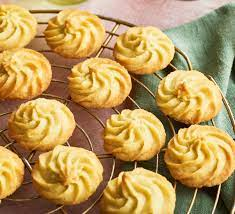

Cookies

Description
Indulge in the irresistible world of cookies, where every bite is a delightful blend of sweetness and comfort.
Cookies, those delectable treats that have been cherished for generations, come in an array of flavors,
textures, and shapes, each promising a unique experience for your taste buds.
The art of cookie-making is a testament to culinary creativity. From the careful selection of ingredients to the
precise baking time, each step is a labor of love that culminates in a small, edible masterpiece. With endless
possibilities for flavors and add-ins—nuts, dried fruits, chocolate, and more—cookies can cater to every palate.
Ingredients
- Flour: The foundation of most cookies, flour provides structure and textur
- Butter: Adds richness and flavor, contributing to the cookie's tenderness.
- Sugar: Provides sweetness and aids in achieving the desired texture and browning.
- Eggs: Bind the ingredients together and add moisture.
- Baking Powder or Baking Soda: Acts as a leavening agent to help the cookies rise.
- Vanilla Extract: Enhances flavor and aroma, imparting a delightful essence to the cookies.
Steps
- Mix Ingredients: Combine flour, sugar, softened butter, eggs, and a touch of vanilla extract in a bowl.
- Form Dough: Blend until a smooth dough forms.
- Shape and Place: Shape dough into small balls and place them on a baking sheet.
- Bake: Bake in a preheated oven until golden and fragrant.
- Cool and Enjoy: Allow cookies to cool, then savor the delicious homemade treats!
Home